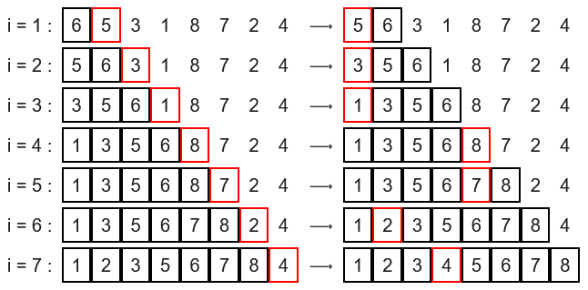

Voici le déroulé :

Le tri est une opération fondamentale en informatique qui consiste à ordonner les éléments d'une liste selon un critère (croissant ou décroissant).
Il existe de nombreux algorithmes de tri, chacun avec ses avantages et inconvénients. Dans ce cours, nous étudierons deux algorithmes simples mais importants :
Le tri par insertion fonctionne comme lorsqu'on trie des cartes à jouer dans sa main :
Analogie : Imaginez que vous recevez des cartes une par une et que vous les insérez à leur place dans votre main déjà triée.
Trions la liste [6, 5, 3, 1, 8, 7, 2, 4] par insertion :

Voici le déroulé :
Version simplifiée en français :
Pour chaque élément de la liste (à partir du 2ème) :
Mémoriser l'élément courant
Tant que l'élément précédent est plus grand :
Décaler l'élément précédent vers la droite
Insérer l'élément mémorisé à sa place
Pseudo-code détaillé :
Algorithme tri_insertion(liste)
Pour i allant de 1 à longueur(liste) - 1 :
element_a_inserer ← liste[i]
j ← i - 1
Tant que j >= 0 ET liste[j] > element_a_inserer :
liste[j + 1] ← liste[j]
j ← j - 1
liste[j + 1] ← element_a_inserer
Triez la liste [8, 3, 7, 1] à la main en utilisant le tri par insertion.
Complétez le tableau suivant :
| Itération | i | Élément à insérer | État de la liste | Partie triée |
|---|---|---|---|---|
| Initial | - | - | [8, 3, 7, 1] | [8] |
| 1 | 1 | 3 | [___, ___, 7, 1] | [___, ___] |
| 2 | 2 | 7 | [___, ___, ___, 1] | [___, ___, ___] |
| 3 | 3 | 1 | [___, ___, ___, ___] | [___, ___, ___, ___] |
Créez un nouveau dossier Chapitre_6_Algorithmique.
Dans ce dossier, créez un nouveau fichier python nommé : tri_insertion.py :
Vous implémenterez ce tri en python avec votre IDE favori (ou Thonny).
Le tri par sélection fonctionne de la manière suivante :
Analogie : C'est comme si on devait ranger une main, on prend la plus petite on la met à droite de sa main, puis on cherche la plus petite parmi les cartes qui restent, etc.
Trions la liste [5, 2, 4, 6, 1, 3] par sélection :
État initial : [5, 2, 4, 6, 1, 3]
Étape 1 : Chercher le minimum dans [5, 2, 4, 6, 1, 3] → 1
Échanger 1 et 5 → [1, 2, 4, 6, 5, 3]
Étape 2 : Chercher le minimum dans [2, 4, 6, 5, 3] → 2
2 est déjà en place → [1, 2, 4, 6, 5, 3]
Étape 3 : Chercher le minimum dans [4, 6, 5, 3] → 3
Échanger 3 et 4 → [1, 2, 3, 6, 5, 4]
Étape 4 : Chercher le minimum dans [6, 5, 4] → 4
Échanger 4 et 6 → [1, 2, 3, 4, 5, 6]
Étape 5 : Chercher le minimum dans [5, 6] → 5
5 est déjà en place → [1, 2, 3, 4, 5, 6]
Résultat : [1, 2, 3, 4, 5, 6]
Voici le déroulement :
Version simplifiée en français :
Pour chaque position de la liste :
Trouver le minimum dans la partie non triée
Échanger le minimum avec l'élément à la position courante
Pseudo-code détaillé :
Algorithme tri_selection(liste)
Pour i allant de 0 à longueur(liste) - 2 :
indice_min ← i
Pour j allant de i + 1 à longueur(liste) - 1 :
Si liste[j] < liste[indice_min] :
indice_min ← j
Si indice_min ≠ i :
Échanger liste[i] et liste[indice_min]
Triez la liste [9, 4, 6, 2] à la main en utilisant le tri par sélection.
Complétez le tableau suivant :
| Itération | i | Minimum trouvé | Indice du minimum | Échange | État de la liste |
|---|---|---|---|---|---|
| Initial | - | - | - | - | [9, 4, 6, 2] |
| 1 | 0 | ___ | ___ | 9 ↔ ___ | [___, 4, 6, 9] |
| 2 | 1 | ___ | ___ | 4 ↔ ___ | [___, ___, 6, 9] |
| 3 | 2 | ___ | ___ | 6 ↔ ___ | [___, ___, ___, ___] |
Bon vous avez compris... vous créez un autre fichier tri_selection.py dans votre dossier Chapitre_6_algoritique... Allez au boulot !!
Effectuez la trace complète du tri par insertion sur la liste [7, 3, 5, 1].
Effectuez la trace complète du tri par sélection sur la liste [8, 2, 5, 3].
Pour la liste [4, 3, 2, 1] :
tri_insertion.py et tri_selection.py.complexite.py.import tri_insertion
import tri_selection
A retenir :
Tri par insertion : $O (n²)$
Tri par sélection : $O (n²)$